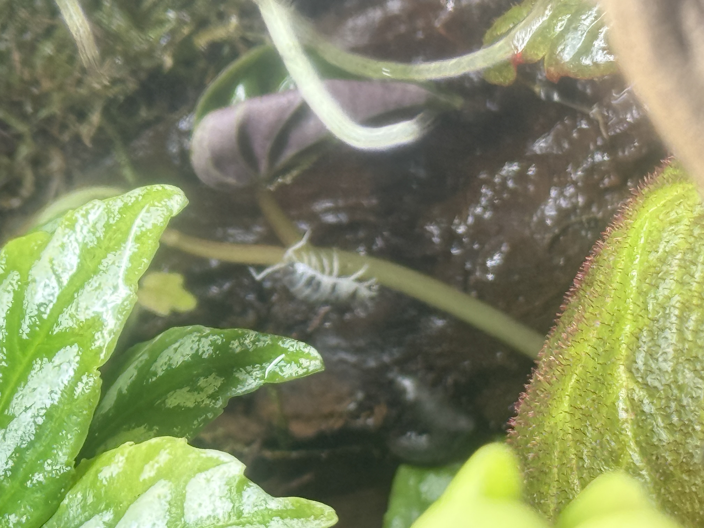
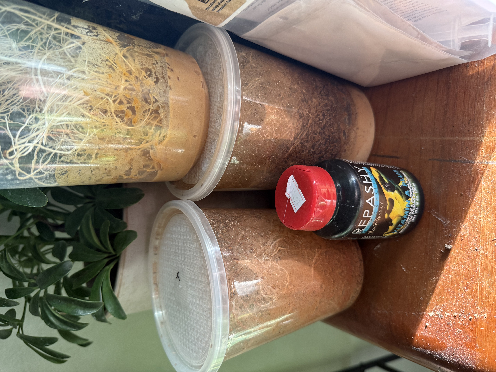

Frog Hospitlaity!
How Do I Take Care of My Frogs?! Dart frogs are, surprisingly, some of the most easy frogs to take care of! They love the humid and wet parts of the rainforest, and with the Vivarium that is what we are going to try and recreate! They are primarily found in the jungles of South and Central America. With a specific tank called a Vivarium we take a little slice of the rainforest into our homes. Inside this vivarium we put draining soil and a false bottom, with the substrate figured out we can go to whats inside. Next we add drift wood or other wood that creates a great hold for moisture and humidity. When we get a look that we like we need to get into the fun part, PLANTS! When we add your favorite tropical plants we need a "clean up crew" for frog and plant waste. The next step is to add isopods and springtails! These little guys will be the one that use the waste of the frogs, plants, and even mold and turn it into fertilizer for the plants. BUT WAIT! Before we add any frogs we need to make sure all of the plants and isopods are thriving and the plants are rooted and planted! Make sure to spray down the tank with Reverse Osmosis water so the harsh minerals don't hurt the frogs! Make sure that you spray the tank down twice a day for about 30 seconds each. Spray more for longer in more arid climates, and less in more humid climates. After that we can start getting our frogs!

Here is my personal tank only a couple months after planting!
Now that we have the frogs we need to talk about feeding! Dependig on the different types of frogs that you have, we need different types of flies to feed them. If you have smaller frogs like the Ranitomeya speciec they love smaller flies like the melanogaster, if you have larger, they prefer the Turkish. When feeding the frogs you want about 20-30 flies for each frog in the tank, you need to dust them with a vitamin suppliment like Repashy's dart frog suppliment. When feeding we try to aim for once a day and enough for the whole day. When feeding I prefer to have a litle piece of a fruit of some sort for the flies to breed in the tank for a extensive suppliment of flies throughout the week. Make sure that you have at least 2 of the fruit fly cultures going at the same time becuase they are pretty fragile and can die fairly quick. There is not really such thing as overfeeding, so if you have a lot of flies breeding let them loose in the tank!
Shawinigan Way SW
Calgary, AB T2Y 2A1, Canada
376-477-8532
I do not have and affiliation with this company just my favorite one.